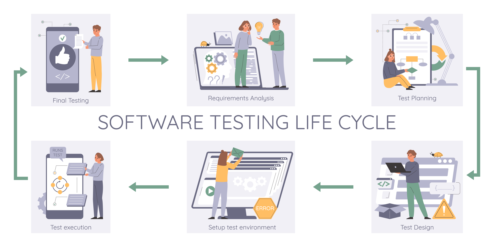

Software Testing Life Cycle (STLC): A Comprehensive Guide

Key Takeaways
- STLC is a systematic process that defines how testing activities are planned, executed, and monitored
- Understanding STLC phases helps in delivering high-quality software
- Integration with SDLC ensures comprehensive testing coverage
- Proper implementation of STLC leads to better quality and efficiency
In the world of software development, ensuring quality is paramount. While the Software Development Life Cycle (SDLC) focuses on building software, the Software Testing Life Cycle (STLC) ensures that the software meets the desired quality standards before it reaches the end user. The STLC is a systematic process that defines how testing activities are planned, executed, and monitored throughout the development lifecycle.
In this blog post, we'll delve into the Software Testing Life Cycle (STLC), exploring its phases, objectives, deliverables, and how it integrates with the SDLC. Whether you're new to testing or looking to deepen your understanding, this guide will provide a clear roadmap for mastering the STLC.
What is the Software Testing Life Cycle (STLC)?
The Software Testing Life Cycle (STLC) is a sequence of activities performed by the testing team to ensure that the software application is thoroughly tested and free of defects. It provides a structured approach to planning, designing, executing, and evaluating tests, ensuring that every aspect of the application is validated against requirements.
Unlike the SDLC, which focuses on the entire development process, the STLC is specifically dedicated to testing. It begins early in the development lifecycle—often during the requirement analysis phase—and continues until the software is deployed and maintained.
Phases of the Software Testing Life Cycle (STLC)
The STLC consists of several distinct phases, each with specific objectives, activities, and deliverables. Let's explore these phases in detail:
- Requirement Analysis
- Objective: Understand the testing scope and identify testable requirements.
- Activities:
- Collaborate with stakeholders to gather functional and non-functional requirements.
- Identify gaps, ambiguities, or inconsistencies in the requirements.
- Determine what needs to be tested and prioritize testing efforts based on risk.
- Deliverables:
- Requirements Traceability Matrix (RTM).
- List of testable features and acceptance criteria.
- Test Planning
- Objective: Define the overall testing strategy and allocate resources.
- Activities:
- Develop a Test Plan document outlining the scope, objectives, timelines, and risks.
- Identify testing tools, environments, and frameworks.
- Assign roles and responsibilities to team members.
- Estimate effort and budget for testing activities.
- Deliverables:
- Test Plan document.
- Risk Assessment report.
- Test Case Development
- Objective: Create detailed test cases to validate the application's functionality.
- Activities:
- Write clear, concise, and reusable test cases covering positive and negative scenarios.
- Prepare test data required for executing test cases.
- Review test cases with stakeholders to ensure accuracy and completeness.
- Deliverables:
- Test cases and test scripts.
- Test data sets.
- Test Environment Setup
- Objective: Set up the infrastructure and tools needed for testing.
- Activities:
- Configure hardware, software, network, and databases required for testing.
- Ensure the environment mimics the production setup as closely as possible.
- Verify that all necessary tools (e.g., Selenium, JMeter) are installed and configured.
- Deliverables:
- Fully operational test environment.
- Environment readiness report.
- Test Execution
- Objective: Execute test cases and identify defects.
- Activities:
- Run test cases manually or through automation tools.
- Log defects in a defect tracking tool (e.g., JIRA, Bugzilla).
- Retest fixed defects and verify their resolution.
- Perform regression testing to ensure recent changes haven't introduced new issues.
- Deliverables:
- Test execution results (pass/fail status).
- Defect reports.
- Test Closure
- Objective: Evaluate the testing process and prepare for deployment.
- Activities:
- Analyze test results to determine whether the application meets exit criteria.
- Document lessons learned and areas for improvement.
- Archive test artifacts (test cases, scripts, logs) for future reference.
- Conduct a closure meeting with stakeholders to review outcomes.
- Deliverables:
- Test summary report.
- Metrics and KPIs (e.g., defect density, test coverage).
Integration of STLC with SDLC
The STLC is an integral part of the Software Development Life Cycle (SDLC) and aligns closely with its phases. Here's how the STLC integrates with the SDLC:
- Requirement Analysis (SDLC) ↔ Requirement Analysis (STLC): Testers analyze requirements to identify testable features and prepare for testing.
- Design (SDLC) ↔ Test Planning (STLC): While developers design the system architecture, testers create the test plan and strategy.
- Implementation (SDLC) ↔ Test Case Development (STLC): As developers write code, testers develop test cases and prepare test data.
- Testing (SDLC) ↔ Test Execution (STLC): Developers hand over the build to testers, who execute test cases and report defects.
- Deployment (SDLC) ↔ Test Closure (STLC): After thorough testing, the application is deployed, and testers finalize documentation.
- Maintenance (SDLC) ↔ Regression Testing (STLC): During maintenance, testers ensure that updates and patches don't introduce new defects.
This seamless integration ensures that testing is not an afterthought but a continuous activity throughout the development lifecycle.
Benefits of Following the STLC
Adopting the STLC offers numerous advantages, including:
- Improved Quality: Systematic testing ensures that defects are identified and resolved early, reducing the likelihood of critical failures in production.
- Early Detection of Issues: By starting testing early (e.g., during requirement analysis), teams can catch issues before they escalate.
- Better Communication: Clear documentation and defined phases enhance collaboration between testers, developers, and stakeholders.
- Cost Efficiency: Fixing defects during testing is far less expensive than addressing them after deployment.
- Risk Mitigation: Identifying and prioritizing risks early minimizes potential disruptions.
- Scalability: A structured approach makes it easier to scale testing efforts as projects grow in complexity.
Challenges in Implementing the STLC
While the STLC provides a robust framework, it comes with its own set of challenges:
- Changing Requirements: Evolving needs can disrupt the planned workflow, especially if testing starts late in the cycle.
- Resource Constraints: Limited budgets, time, or skilled personnel can hinder progress.
- Tool Selection: Choosing the right tools for manual and automated testing requires careful consideration.
- Balancing Speed and Quality: Meeting tight deadlines without compromising quality requires meticulous planning.
- Environment Issues: Setting up and maintaining a stable test environment can be challenging.
- Communication Gaps: Misalignment between testers and developers can lead to misunderstandings and rework.
Best Practices for Effective STLC Implementation
To maximize the effectiveness of the STLC, follow these best practices:
- Start Testing Early: Begin testing during the requirement analysis phase to catch issues early.
- Collaborate Closely: Foster open communication between testers, developers, and stakeholders.
- Automate Where Possible: Use automation tools to streamline repetitive tasks and improve efficiency.
- Prioritize Based on Risk: Focus testing efforts on high-risk areas to maximize impact.
- Document Everything: Maintain detailed records of test cases, results, and defects for future reference.
- Continuous Learning: Stay updated on the latest testing tools, methodologies, and industry trends.
Conclusion
The Software Testing Life Cycle (STLC) is a vital component of delivering high-quality software. By following a structured approach to testing, teams can ensure that applications are functional, reliable, and user-friendly. Understanding the phases, objectives, and deliverables of the STLC empowers testers to contribute effectively to the success of software projects.
Whether you're a beginner or an experienced QA professional, mastering the STLC will enhance your ability to deliver exceptional software. Stay tuned to QA Blogs for more insights, tutorials, and best practices on QA and software testing.
Join Our Community of QA Professionals
Get exclusive access to in-depth articles, testing strategies, and industry insights. Stay ahead of the curve with our expert-curated content delivered straight to your inbox.
Nikunj Mistri
Founder, QA Blogs
About the Author